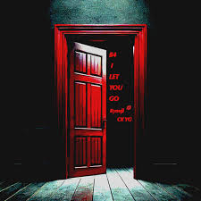

Bajet's website
b4 i let you go
Link to YouTube

Before I let you go
Can I get a kiss goodnight baby
Before I let you go
Can I get a kiss goodnight baby
Before I let you go
Can I get a kiss goodnight baby
Before I let you go
Before I let you go
Can I get a kiss goodnight baby mmm
Can I get a kiss goodnight baby mmm
Can I get a kiss goodnight baby
Before I let you go
Before I let you go
Ikaw lang ang nakakaalam
Kung papaano kuhain
Himig ng aking damdamin
'Di mapigilan palagi umaawit
Simoy ng hanging lumalamig kapag
Sa gabi 'di ka kasama kumain
Minsan may dapat unahin
Pera lamang kukuhain babe
Sa'kin wala 'yun malisya
Lumapit s'ya sa'kin malisya
Atensyon malabo makuha ng babaeng
Unang gabi lang nakita
At 'di ko kilala si Tisha
Mas lalo naman si Felicia
Itigil mo 'yang paghihinala mong
Sa diskarte ko nakakasira
Mahal marami pa 'kong gustong tuparin
Hindi lang para sa'kin para sa'yo din
Sa ngayon hayaan mo 'kong tapusin
Ang bagay na dati 'di ko kayang gawin
'Di man mabigyan ng agarang singsing
Ituro mo kung saan mo gusto dadalhin
Maintindihan mo sana 'yung ginagawa ko
Ay hindi nila kayang gawin
'Pag dalawa tayong magkasama
Parang Rocky at Riri
Kahit ano pang sabihin nila sa 'tin
Ay wala akong lihim
Sa'yo baby masyadong totoo
Kahit hindi mo maintindihan
Mga dala 'kong problems that's alright babe
Sana makita mo lang na hindi ako nonsense
Before I let you go
Can I get a kiss goodnight baby
Dahilan ay ikaw 'yung ba't 'di naligaw
Ang tanong kung may chance maybe
Before I let you go
Can I get a kiss goodnight baby
Sabay tayong yumaman 'wag lang mainip
Parating na 'yung racks baby
Kukuhain 'yung bag together
Bibilhan ka Louis bag na leather
Sana alam mong I got you forever
Ibalik mo tiwala lang sana
Pangako mong kahit tumagilid
Mga plano ikaw pa rin sana
Paulit-ulit pipilitin na
Sa huli ikaw 'yung makasama
At kung akala mo madali
Para sa'kin mahirap pa rin
Pakisamahan init ng ulo mo
Bakit laging galit ka kasi
Ang sarap-sarap mong katabi lalo asarin
Maintindihan mo sana 'yung ginagawa ko
Ay hindi nila kaya gawin
Before I let you go
Can I get a kiss goodnight baby
Before I let you go
Can I get a kiss goodnight baby
Before I let you go
Can I get a kiss goodnight baby
Before I let you go
Before I let you go mmm
Can I get a kiss goodnight baby mmm
Can I get a kiss goodnight baby mmm
Can I get a kiss goodnight baby
Before I let you go
Before I let you go